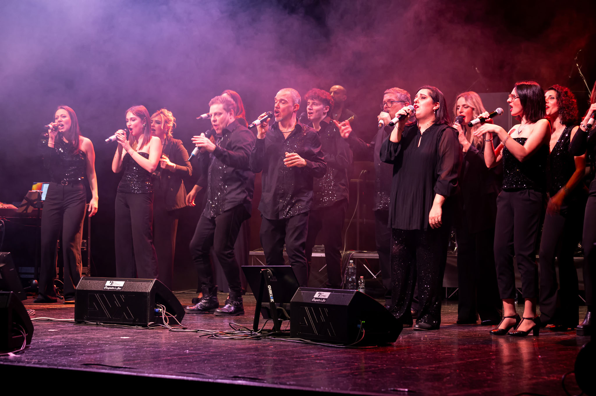
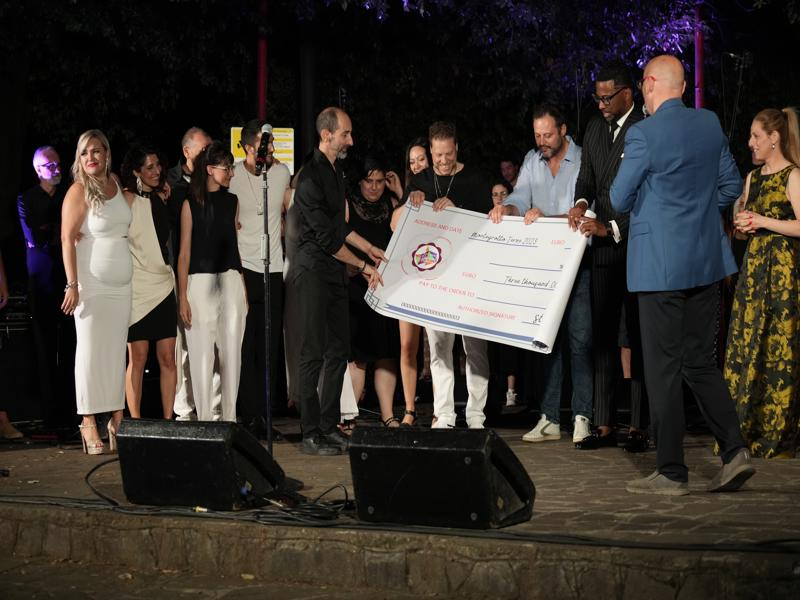
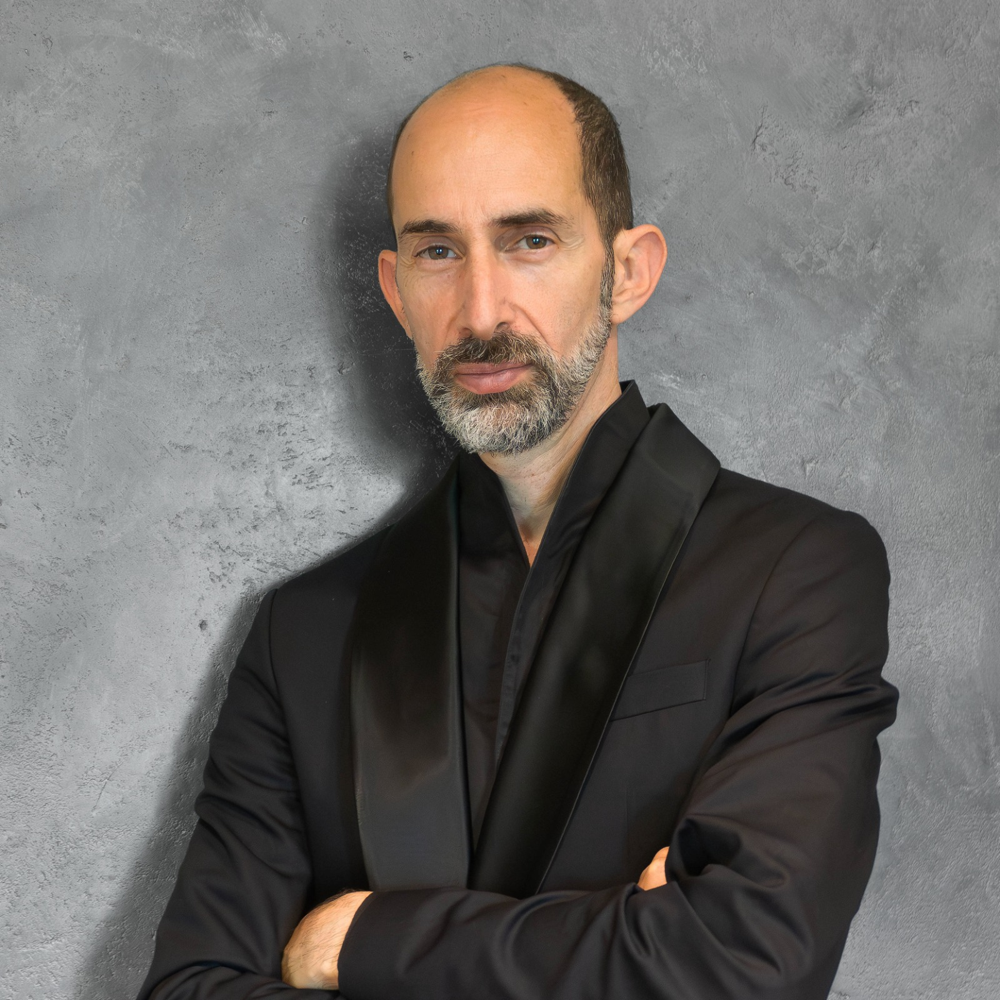

Il coro
Le voci di For Joy

Barbara Quercioli

Fiamma Ciampi

Francesca Alzeni

Gaetano Cusumano

Gianna Bagnoli

Ilaria Neri

Jasmin van Schaik

Luca Massari

Matteo Bonciani

Mirko Graffeo

Silvia Zuffellato

Tania Petrone

Valeria D'Amico
Tante formazioni, una sola passione: raccontare gioia e speranza attraverso il gospel.
Il For Joy Contemporary Gospel Choir è un coro dinamico e coinvolgente, fondato nel 2004, che si distingue per la sua capacità di unire la freschezza e l'energia della musica dal vivo con l'emozione e la spiritualità tipiche della musica gospel.
Con un repertorio che abbraccia brani tradizionali e contemporanei, il coro si propone di trasmettere messaggi di gioia, speranza e unità. Composto da cantanti e musicisti provenienti da background musicali diversi, il gruppo riesce a creare un'esperienza unica ad ogni esibizione, coinvolgendo il pubblico e rendendolo parte integrante dello spettacolo.
I loro concerti si tengono in location prestigiose in giro per l'Italia, dimostrando un impegno costante nella diffusione della cultura gospel e nella promozione della musica corale contemporanea.


Il coronamento di anni di prove e concerti: nel 2023 il For Joy si è classificato al primo posto al European Gospel Festival, dopo un percorso che ha toccato anche le finali regionali dell'Emergenza Festival e le semifinali nazionali del Roma Music Festival.

"Tante le formazioni che si sono avvicendate in tutti questi anni.
Alcune le persone che sono presenti fino dall'inizio.
Sempre forti le emozioni che provo sentendo la musica che ne scaturisce,
ai concerti come alle singole prove.
Questa passione mi accompagna e questi sono i For Joy."
Scopri i prossimi concerti o riascolta i nostri brani e video.